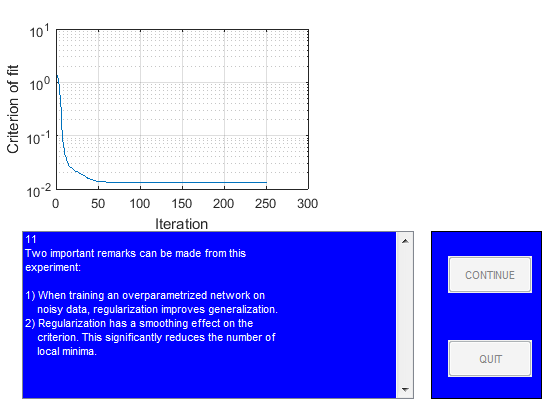

close all
StopDemo=0;
figure
guihand=gcf;
for k=1:1,
[guihand,edmulti,contbut,quitbut]=pmnshow;
set(guihand,'Name','Demonstration of regularization');
s0='1';
s1='In this demo it is shown how regularization by simple';
s2='weight decay might be of help when dealing with';
s3='overparametrization in neural networks.';
s4=[];
s5='The problem, which will be the subject of our';
s6='investigation, is to use a neural network for fitting';
s7='the underlying sine wave from the points marked';
s8='''training data.''';
smat=str2mat(s0,s1,s2,s3,s4,s5,s6,s7,s8);
load('dataSetofSpam.mat');
PHI1=trainData;
Y1=trainlabel;
PHI2=testData;
Y2=testlabel;
PHI1=PHI1';
PHI2=PHI2';
Y1=Y1';
Y2=Y2';
sub1=subplot('position',[0.1 0.55 0.38 0.38]);
plot(PHI1,Y1,'+');
set(gca,'Xlim',[min(PHI1(:)) max(PHI1(:))]);
title('Training data');
sub2=subplot('position',[0.57 0.55 0.38 0.38]);
plot(PHI2,Y2,'m+')
set(gca,'Xlim',[min(PHI2(:)) max(PHI2(:))]);
title('Test data');
drawnow
if StopDemo==1, close all, break; end
s0='2';
s1='Let''s begin by training a network with 15';
s2='hidden ''tanh'' units and one linear output unit';
s3='without using regularization.';
smat=str2mat(s0,s1,s2,s3);
NetDef = ['HHHHHHHHHHHHHHHHHHHH'
'L-------------------'];
W1 = rand(20,5);
W2 = rand(1,21);
delete(sub1);
delete(sub2);
sub1=subplot('position',[0.1 0.55 0.45 0.38]);
pmnshow(smat,guihand,edmulti,contbut,quitbut);
if StopDemo==1, close all, break; end
s0='3';
s1=[];
s2=' >> Training process in action!! <<';
s3=[];
s4=[];
s5='We run up to 500 iterations so you may have to';
s6='wait for a while!';
smat=str2mat(s0,s1,s2,s3,s4,s5,s6);
set(edmulti,'String',smat);
drawnow
trparms = settrain;
trparms = settrain(trparms,'maxiter',500);
[W1,W2,NSSEvec,iter,lambda2]=marq(NetDef,W1,W2,PHI1,Y1,trparms);
delete(gca);
subplot('position',[0.1 0.55 0.45 0.38]);
semilogy(NSSEvec);
xlabel('Iteration');
ylabel('Criterion of fit');
grid
s0='4';
s1='Next we compute training error, test error,';
s2='FPE estimate, and LOO estimate to get an idea';
s3='of how well the network fits the curve.';
smat=str2mat(s0,s1,s2,s3);
pmnshow(smat,guihand,edmulti,contbut,quitbut);
if StopDemo==1, close all, break; end
[Yhat,E,NSSE_tr] = nneval(NetDef,W1,W2,PHI1,Y1,1);
[Yhat,E,NSSE_te] = nneval(NetDef,W1,W2,PHI2,Y2,1);
FPE = fpe(NetDef,W1,W2,PHI1,Y1,trparms);
trparms2 = settrain(trparms,'maxiter',0);
ELOO= loo(NetDef,W1,W2,PHI1,Y1,trparms2);
s0='5';
s1=['Training error: ' num2str(NSSE_tr)];
s2=['Test Error: ' num2str(NSSE_te)];
s3=['FPE estimate: ' num2str(FPE)];
s4=['LOO estimate: ' num2str(ELOO)];
smat=str2mat(s0,s1,s2,s3,s4);
pmnshow(smat,guihand,edmulti,contbut,quitbut);
if StopDemo==1, close all, break; end
s0='6';
s1='This result is typical for networks having too many';
s2='weights. The superflous weights will capture';
s3='some of the noise on the training set, leading to';
s4='a poor generalization ability. This phenomenon is';
s5='usually referred to as ''overfitting''';
s6=[];
s7='Let''s try to train with a small weight decay (0.02)';
s8='and see what happens.';
smat=str2mat(s0,s1,s2,s3,s4,s5,s6,s7,s8);
pmnshow(smat,guihand,edmulti,contbut,quitbut);
if StopDemo==1, close all, break; end
s0='7';
s1=[];
s2=' >> Training process in action!! <<';
s3=[];
s4=[];
s5='We run up to 500 iterations so you may have to';
s6='wait for a while!';
smat=str2mat(s0,s1,s2,s3,s4,s5,s6);
set(edmulti,'String',smat);
drawnow
trparms = settrain(trparms,'D',0.02);
[W1,W2,NSSEvec,iter,lambda2]=marq(NetDef,W1,W2,PHI1,Y1,trparms);
delete(gca);
subplot('position',[0.1 0.55 0.45 0.38]);
semilogy(NSSEvec);
xlabel('Iteration');
ylabel('Criterion of fit');
grid
[Yhat,E,NSSE_tr2] = nneval(NetDef,W1,W2,PHI1,Y1,1);
[Yhat,E,NSSE_te2] = nneval(NetDef,W1,W2,PHI2,Y2,1);
trparms2 = settrain(trparms,'maxiter',0);
s0='8';
s1=' No regularization Regularization';
s2=['Training error: ' num2str(NSSE_tr) ' ' num2str(NSSE_tr2) ];
s3=['Test Error: ' num2str(NSSE_te) ' ' num2str(NSSE_te2)];
s6=[];
s7='It looks as if the weight decay actually improved';
s8='generalization.';
smat=str2mat(s0,s1,s2,s3,s4,s5,s6,s7,s8);
pmnshow(smat,guihand,edmulti,contbut,quitbut);
if StopDemo==1, close all, break; end
s0='9';
s1='To really proof the effect of regularization, we';
s2='redo the experiment for 50 different values of the';
s3='weight decay parameter. Also we train the network';
s4='7 times for each weight decay, using different initial';
s5='weights in order to reduce the influence from local';
s6='minima.';
smat=str2mat(s0,s1,s2,s3,s4,s5,s6);
pmnshow(smat,guihand,edmulti,contbut,quitbut);
if StopDemo==1, close all, break; end
s0='11';
s1='Two important remarks can be made from this';
s2='experiment:';
s25=[];
s3='1) When training an overparametrized network on';
s4=' noisy data, regularization improves generalization.';
s5='2) Regularization has a smoothing effect on the';
s6=' criterion. This significantly reduces the number of';
s7=' local minima.';
smat=str2mat(s0,s1,s2,s25,s3,s4,s5,s6,s7);
set(edmulti,'String',smat);
drawnow
TestatingData=PHI2;
save('TestatingData.mat','TestatingData');
save('modelEvaluation.mat','NetDef','PHI1','PHI2','W1','W2','Y1','Y2');
end
Network training started at 11.59.10
iteration # 1 W = 4.937e+00iteration # 2 W = 1.969e+00iteration # 3 W = 1.290e+00iteration # 4 W = 2.121e-02iteration # 5 W = 1.788e-02iteration # 6 W = 1.698e-02iteration # 7 W = 1.669e-02iteration # 8 W = 1.648e-02iteration # 9 W = 1.617e-02iteration # 10 W = 1.456e-02iteration # 11 W = 1.436e-02iteration # 12 W = 1.283e-02iteration # 13 W = 1.259e-02iteration # 14 W = 1.252e-02iteration # 15 W = 1.226e-02iteration # 16 W = 1.214e-02iteration # 17 W = 1.190e-02iteration # 18 W = 1.168e-02iteration # 19 W = 1.149e-02iteration # 20 W = 1.137e-02iteration # 21 W = 1.122e-02iteration # 22 W = 1.106e-02iteration # 23 W = 1.090e-02iteration # 24 W = 1.074e-02iteration # 25 W = 1.058e-02iteration # 26 W = 1.039e-02iteration # 27 W = 1.020e-02iteration # 28 W = 1.006e-02iteration # 29 W = 9.918e-03iteration # 30 W = 9.729e-03iteration # 31 W = 9.548e-03iteration # 32 W = 9.368e-03iteration # 33 W = 9.295e-03iteration # 34 W = 8.998e-03iteration # 35 W = 8.860e-03iteration # 36 W = 8.719e-03iteration # 37 W = 8.507e-03iteration # 38 W = 8.350e-03iteration # 39 W = 8.166e-03iteration # 40 W = 7.955e-03iteration # 41 W = 7.750e-03iteration # 42 W = 7.548e-03iteration # 43 W = 7.395e-03iteration # 44 W = 7.038e-03iteration # 45 W = 6.709e-03iteration # 46 W = 6.629e-03iteration # 47 W = 6.564e-03iteration # 48 W = 6.504e-03iteration # 49 W = 6.446e-03iteration # 50 W = 6.393e-03iteration # 51 W = 6.342e-03iteration # 52 W = 6.294e-03iteration # 53 W = 6.247e-03iteration # 54 W = 6.201e-03iteration # 55 W = 6.200e-03iteration # 56 W = 6.072e-03iteration # 57 W = 6.004e-03iteration # 58 W = 5.975e-03iteration # 59 W = 5.899e-03iteration # 60 W = 5.864e-03iteration # 61 W = 5.827e-03iteration # 62 W = 5.790e-03iteration # 63 W = 5.753e-03iteration # 64 W = 5.734e-03iteration # 65 W = 5.633e-03iteration # 66 W = 5.549e-03iteration # 67 W = 5.435e-03iteration # 68 W = 5.273e-03iteration # 69 W = 5.117e-03iteration # 70 W = 4.979e-03iteration # 71 W = 4.842e-03iteration # 72 W = 4.611e-03iteration # 73 W = 4.397e-03iteration # 74 W = 4.277e-03iteration # 75 W = 4.036e-03iteration # 76 W = 3.953e-03iteration # 77 W = 3.918e-03iteration # 78 W = 3.881e-03iteration # 79 W = 3.840e-03iteration # 80 W = 3.799e-03iteration # 81 W = 3.764e-03iteration # 82 W = 3.734e-03iteration # 83 W = 3.709e-03iteration # 84 W = 3.690e-03iteration # 85 W = 3.637e-03iteration # 86 W = 3.605e-03iteration # 87 W = 3.587e-03iteration # 88 W = 3.549e-03iteration # 89 W = 3.517e-03iteration # 90 W = 3.505e-03iteration # 91 W = 3.477e-03iteration # 92 W = 3.456e-03iteration # 93 W = 3.408e-03iteration # 94 W = 3.396e-03iteration # 95 W = 3.373e-03iteration # 96 W = 3.362e-03iteration # 97 W = 3.349e-03iteration # 98 W = 3.333e-03iteration # 99 W = 3.314e-03iteration # 100 W = 3.292e-03iteration # 101 W = 3.269e-03iteration # 102 W = 3.245e-03iteration # 103 W = 3.222e-03iteration # 104 W = 3.198e-03iteration # 105 W = 3.175e-03iteration # 106 W = 3.152e-03iteration # 107 W = 3.136e-03iteration # 108 W = 3.087e-03iteration # 109 W = 3.073e-03iteration # 110 W = 3.073e-03iteration # 111 W = 3.000e-03iteration # 112 W = 2.982e-03iteration # 113 W = 2.962e-03iteration # 114 W = 2.942e-03iteration # 115 W = 2.939e-03iteration # 116 W = 2.890e-03iteration # 117 W = 2.870e-03iteration # 118 W = 2.842e-03iteration # 119 W = 2.815e-03iteration # 120 W = 2.800e-03iteration # 121 W = 2.776e-03iteration # 122 W = 2.761e-03iteration # 123 W = 2.731e-03iteration # 124 W = 2.700e-03iteration # 125 W = 2.670e-03iteration # 126 W = 2.645e-03iteration # 127 W = 2.636e-03iteration # 128 W = 2.586e-03iteration # 129 W = 2.571e-03iteration # 130 W = 2.554e-03iteration # 131 W = 2.537e-03iteration # 132 W = 2.519e-03iteration # 133 W = 2.502e-03iteration # 134 W = 2.486e-03iteration # 135 W = 2.471e-03iteration # 136 W = 2.455e-03iteration # 137 W = 2.440e-03iteration # 138 W = 2.425e-03iteration # 139 W = 2.411e-03iteration # 140 W = 2.398e-03iteration # 141 W = 2.387e-03iteration # 142 W = 2.376e-03iteration # 143 W = 2.365e-03iteration # 144 W = 2.351e-03iteration # 145 W = 2.332e-03iteration # 146 W = 2.310e-03iteration # 147 W = 2.286e-03iteration # 148 W = 2.268e-03iteration # 149 W = 2.266e-03iteration # 150 W = 2.228e-03iteration # 151 W = 2.214e-03iteration # 152 W = 2.183e-03iteration # 153 W = 2.182e-03iteration # 154 W = 2.156e-03iteration # 155 W = 2.149e-03iteration # 156 W = 2.142e-03iteration # 157 W = 2.135e-03iteration # 158 W = 2.128e-03iteration # 159 W = 2.121e-03iteration # 160 W = 2.114e-03iteration # 161 W = 2.107e-03iteration # 162 W = 2.106e-03iteration # 163 W = 2.089e-03iteration # 164 W = 2.081e-03iteration # 165 W = 2.068e-03iteration # 166 W = 2.054e-03iteration # 167 W = 2.026e-03iteration # 168 W = 2.006e-03iteration # 169 W = 1.988e-03iteration # 170 W = 1.968e-03iteration # 171 W = 1.946e-03iteration # 172 W = 1.922e-03iteration # 173 W = 1.921e-03iteration # 174 W = 1.848e-03iteration # 175 W = 1.825e-03iteration # 176 W = 1.804e-03iteration # 177 W = 1.784e-03iteration # 178 W = 1.764e-03iteration # 179 W = 1.744e-03iteration # 180 W = 1.726e-03iteration # 181 W = 1.710e-03iteration # 182 W = 1.696e-03iteration # 183 W = 1.683e-03iteration # 184 W = 1.680e-03iteration # 185 W = 1.651e-03iteration # 186 W = 1.642e-03iteration # 187 W = 1.629e-03iteration # 188 W = 1.623e-03iteration # 189 W = 1.597e-03iteration # 190 W = 1.591e-03iteration # 191 W = 1.587e-03iteration # 192 W = 1.584e-03iteration # 193 W = 1.571e-03iteration # 194 W = 1.568e-03iteration # 195 W = 1.565e-03iteration # 196 W = 1.562e-03iteration # 197 W = 1.559e-03iteration # 198 W = 1.556e-03iteration # 199 W = 1.553e-03iteration # 200 W = 1.549e-03iteration # 201 W = 1.546e-03iteration # 202 W = 1.545e-03iteration # 203 W = 1.536e-03iteration # 204 W = 1.531e-03iteration # 205 W = 1.526e-03iteration # 206 W = 1.523e-03iteration # 207 W = 1.519e-03iteration # 208 W = 1.515e-03iteration # 209 W = 1.509e-03iteration # 210 W = 1.504e-03iteration # 211 W = 1.499e-03iteration # 212 W = 1.477e-03iteration # 213 W = 1.473e-03iteration # 214 W = 1.468e-03iteration # 215 W = 1.464e-03iteration # 216 W = 1.459e-03iteration # 217 W = 1.455e-03iteration # 218 W = 1.450e-03iteration # 219 W = 1.445e-03iteration # 220 W = 1.440e-03iteration # 221 W = 1.436e-03iteration # 222 W = 1.431e-03iteration # 223 W = 1.426e-03iteration # 224 W = 1.421e-03iteration # 225 W = 1.421e-03iteration # 226 W = 1.407e-03iteration # 227 W = 1.402e-03iteration # 228 W = 1.392e-03iteration # 229 W = 1.379e-03iteration # 230 W = 1.367e-03iteration # 231 W = 1.350e-03iteration # 232 W = 1.346e-03iteration # 233 W = 1.344e-03iteration # 234 W = 1.328e-03iteration # 235 W = 1.324e-03iteration # 236 W = 1.321e-03iteration # 237 W = 1.317e-03iteration # 238 W = 1.313e-03iteration # 239 W = 1.310e-03iteration # 240 W = 1.307e-03iteration # 241 W = 1.306e-03iteration # 242 W = 1.294e-03iteration # 243 W = 1.292e-03iteration # 244 W = 1.290e-03iteration # 245 W = 1.289e-03iteration # 246 W = 1.287e-03iteration # 247 W = 1.285e-03iteration # 248 W = 1.284e-03iteration # 249 W = 1.278e-03iteration # 250 W = 1.277e-03iteration # 251 W = 1.276e-03iteration # 252 W = 1.274e-03iteration # 253 W = 1.273e-03iteration # 254 W = 1.272e-03iteration # 255 W = 1.271e-03iteration # 256 W = 1.269e-03iteration # 257 W = 1.268e-03iteration # 258 W = 1.267e-03iteration # 259 W = 1.265e-03iteration # 260 W = 1.264e-03iteration # 261 W = 1.263e-03iteration # 262 W = 1.261e-03iteration # 263 W = 1.260e-03iteration # 264 W = 1.259e-03iteration # 265 W = 1.258e-03iteration # 266 W = 1.256e-03iteration # 267 W = 1.256e-03iteration # 268 W = 1.252e-03iteration # 269 W = 1.252e-03iteration # 270 W = 1.249e-03iteration # 271 W = 1.246e-03iteration # 272 W = 1.243e-03iteration # 273 W = 1.241e-03iteration # 274 W = 1.238e-03iteration # 275 W = 1.238e-03iteration # 276 W = 1.230e-03iteration # 277 W = 1.227e-03iteration # 278 W = 1.222e-03iteration # 279 W = 1.215e-03iteration # 280 W = 1.203e-03iteration # 281 W = 1.196e-03iteration # 282 W = 1.181e-03iteration # 283 W = 1.160e-03iteration # 284 W = 1.147e-03iteration # 285 W = 1.141e-03iteration # 286 W = 1.136e-03iteration # 287 W = 1.133e-03iteration # 288 W = 1.118e-03iteration # 289 W = 1.114e-03iteration # 290 W = 1.110e-03iteration # 291 W = 1.106e-03iteration # 292 W = 1.102e-03iteration # 293 W = 1.097e-03iteration # 294 W = 1.096e-03iteration # 295 W = 1.085e-03iteration # 296 W = 1.080e-03iteration # 297 W = 1.071e-03iteration # 298 W = 1.063e-03iteration # 299 W = 1.056e-03iteration # 300 W = 1.054e-03iteration # 301 W = 1.034e-03iteration # 302 W = 1.028e-03iteration # 303 W = 1.013e-03iteration # 304 W = 9.989e-04iteration # 305 W = 9.858e-04iteration # 306 W = 9.831e-04iteration # 307 W = 9.526e-04iteration # 308 W = 9.346e-04iteration # 309 W = 9.242e-04iteration # 310 W = 9.050e-04iteration # 311 W = 8.785e-04iteration # 312 W = 8.621e-04iteration # 313 W = 8.565e-04iteration # 314 W = 8.421e-04iteration # 315 W = 8.277e-04iteration # 316 W = 8.107e-04iteration # 317 W = 7.989e-04iteration # 318 W = 7.730e-04iteration # 319 W = 7.672e-04iteration # 320 W = 7.658e-04iteration # 321 W = 7.492e-04iteration # 322 W = 7.455e-04iteration # 323 W = 7.420e-04iteration # 324 W = 7.386e-04iteration # 325 W = 7.351e-04iteration # 326 W = 7.311e-04iteration # 327 W = 7.267e-04iteration # 328 W = 7.220e-04iteration # 329 W = 7.172e-04iteration # 330 W = 7.124e-04iteration # 331 W = 7.077e-04iteration # 332 W = 7.033e-04iteration # 333 W = 6.991e-04iteration # 334 W = 6.950e-04iteration # 335 W = 6.910e-04iteration # 336 W = 6.872e-04iteration # 337 W = 6.835e-04iteration # 338 W = 6.799e-04iteration # 339 W = 6.764e-04iteration # 340 W = 6.729e-04iteration # 341 W = 6.695e-04iteration # 342 W = 6.662e-04iteration # 343 W = 6.629e-04iteration # 344 W = 6.597e-04iteration # 345 W = 6.565e-04iteration # 346 W = 6.534e-04iteration # 347 W = 6.504e-04iteration # 348 W = 6.474e-04iteration # 349 W = 6.445e-04iteration # 350 W = 6.416e-04iteration # 351 W = 6.388e-04iteration # 352 W = 6.385e-04iteration # 353 W = 6.310e-04iteration # 354 W = 6.290e-04iteration # 355 W = 6.234e-04iteration # 356 W = 6.182e-04iteration # 357 W = 6.133e-04iteration # 358 W = 6.126e-04iteration # 359 W = 6.002e-04iteration # 360 W = 5.935e-04iteration # 361 W = 5.899e-04iteration # 362 W = 5.756e-04iteration # 363 W = 5.733e-04iteration # 364 W = 5.585e-04iteration # 365 W = 5.545e-04iteration # 366 W = 5.503e-04iteration # 367 W = 5.462e-04iteration # 368 W = 5.437e-04iteration # 369 W = 5.330e-04iteration # 370 W = 5.262e-04iteration # 371 W = 5.207e-04iteration # 372 W = 5.154e-04iteration # 373 W = 5.103e-04iteration # 374 W = 5.053e-04iteration # 375 W = 5.004e-04iteration # 376 W = 4.955e-04iteration # 377 W = 4.905e-04iteration # 378 W = 4.856e-04iteration # 379 W = 4.807e-04iteration # 380 W = 4.759e-04iteration # 381 W = 4.712e-04iteration # 382 W = 4.667e-04iteration # 383 W = 4.623e-04iteration # 384 W = 4.580e-04iteration # 385 W = 4.539e-04iteration # 386 W = 4.498e-04iteration # 387 W = 4.459e-04iteration # 388 W = 4.421e-04iteration # 389 W = 4.383e-04iteration # 390 W = 4.345e-04iteration # 391 W = 4.308e-04iteration # 392 W = 4.271e-04iteration # 393 W = 4.261e-04iteration # 394 W = 4.165e-04iteration # 395 W = 4.130e-04iteration # 396 W = 4.053e-04iteration # 397 W = 3.986e-04iteration # 398 W = 3.919e-04iteration # 399 W = 3.853e-04iteration # 400 W = 3.787e-04iteration # 401 W = 3.726e-04iteration # 402 W = 3.685e-04iteration # 403 W = 3.627e-04iteration # 404 W = 3.607e-04iteration # 405 W = 3.601e-04iteration # 406 W = 3.548e-04iteration # 407 W = 3.536e-04iteration # 408 W = 3.523e-04iteration # 409 W = 3.511e-04iteration # 410 W = 3.496e-04iteration # 411 W = 3.481e-04iteration # 412 W = 3.464e-04iteration # 413 W = 3.447e-04iteration # 414 W = 3.430e-04iteration # 415 W = 3.414e-04iteration # 416 W = 3.399e-04iteration # 417 W = 3.384e-04iteration # 418 W = 3.380e-04iteration # 419 W = 3.343e-04iteration # 420 W = 3.328e-04iteration # 421 W = 3.300e-04iteration # 422 W = 3.273e-04iteration # 423 W = 3.221e-04iteration # 424 W = 3.169e-04iteration # 425 W = 3.099e-04iteration # 426 W = 3.037e-04iteration # 427 W = 2.981e-04iteration # 428 W = 2.930e-04iteration # 429 W = 2.883e-04iteration # 430 W = 2.837e-04iteration # 431 W = 2.792e-04iteration # 432 W = 2.747e-04iteration # 433 W = 2.703e-04iteration # 434 W = 2.671e-04iteration # 435 W = 2.625e-04iteration # 436 W = 2.598e-04iteration # 437 W = 2.577e-04iteration # 438 W = 2.550e-04iteration # 439 W = 2.521e-04iteration # 440 W = 2.493e-04iteration # 441 W = 2.468e-04iteration # 442 W = 2.445e-04iteration # 443 W = 2.423e-04iteration # 444 W = 2.401e-04iteration # 445 W = 2.380e-04iteration # 446 W = 2.359e-04iteration # 447 W = 2.338e-04iteration # 448 W = 2.317e-04iteration # 449 W = 2.296e-04iteration # 450 W = 2.275e-04iteration # 451 W = 2.254e-04iteration # 452 W = 2.233e-04iteration # 453 W = 2.221e-04iteration # 454 W = 2.172e-04iteration # 455 W = 2.127e-04iteration # 456 W = 2.082e-04iteration # 457 W = 2.055e-04iteration # 458 W = 2.011e-04iteration # 459 W = 1.968e-04iteration # 460 W = 1.933e-04iteration # 461 W = 1.903e-04iteration # 462 W = 1.878e-04iteration # 463 W = 1.860e-04iteration # 464 W = 1.831e-04iteration # 465 W = 1.821e-04iteration # 466 W = 1.814e-04iteration # 467 W = 1.806e-04iteration # 468 W = 1.797e-04iteration # 469 W = 1.783e-04iteration # 470 W = 1.769e-04iteration # 471 W = 1.758e-04iteration # 472 W = 1.751e-04iteration # 473 W = 1.747e-04iteration # 474 W = 1.742e-04iteration # 475 W = 1.734e-04iteration # 476 W = 1.725e-04iteration # 477 W = 1.716e-04iteration # 478 W = 1.706e-04iteration # 479 W = 1.698e-04iteration # 480 W = 1.690e-04iteration # 481 W = 1.683e-04iteration # 482 W = 1.676e-04iteration # 483 W = 1.670e-04iteration # 484 W = 1.665e-04iteration # 485 W = 1.660e-04iteration # 486 W = 1.660e-04iteration # 487 W = 1.646e-04iteration # 488 W = 1.642e-04iteration # 489 W = 1.639e-04iteration # 490 W = 1.636e-04iteration # 491 W = 1.634e-04iteration # 492 W = 1.629e-04iteration # 493 W = 1.628e-04iteration # 494 W = 1.627e-04iteration # 495 W = 1.625e-04iteration # 496 W = 1.624e-04iteration # 497 W = 1.624e-04iteration # 498 W = 1.623e-04iteration # 499 W = 1.623e-04iteration # 500 W = 1.621e-04
Network training ended at 11.59.11
Network training started at 11.59.14
iteration # 1 W = 1.393e+00iteration # 2 W = 1.288e+00iteration # 3 W = 1.105e+00iteration # 4 W = 8.251e-01iteration # 5 W = 5.126e-01iteration # 6 W = 3.410e-01iteration # 7 W = 1.369e-01iteration # 8 W = 8.337e-02iteration # 9 W = 6.585e-02iteration # 10 W = 5.093e-02iteration # 11 W = 4.187e-02iteration # 12 W = 4.017e-02iteration # 13 W = 3.435e-02iteration # 14 W = 3.191e-02iteration # 15 W = 2.749e-02iteration # 16 W = 2.615e-02iteration # 17 W = 2.557e-02iteration # 18 W = 2.514e-02iteration # 19 W = 2.493e-02iteration # 20 W = 2.390e-02iteration # 21 W = 2.323e-02iteration # 22 W = 2.264e-02iteration # 23 W = 2.172e-02iteration # 24 W = 2.149e-02iteration # 25 W = 2.112e-02iteration # 26 W = 2.107e-02iteration # 27 W = 2.019e-02iteration # 28 W = 1.961e-02iteration # 29 W = 1.951e-02iteration # 30 W = 1.931e-02iteration # 31 W = 1.855e-02iteration # 32 W = 1.838e-02iteration # 33 W = 1.806e-02iteration # 34 W = 1.759e-02iteration # 35 W = 1.713e-02iteration # 36 W = 1.660e-02iteration # 37 W = 1.639e-02iteration # 38 W = 1.575e-02iteration # 39 W = 1.568e-02iteration # 40 W = 1.549e-02iteration # 41 W = 1.519e-02iteration # 42 W = 1.506e-02iteration # 43 W = 1.490e-02iteration # 44 W = 1.469e-02iteration # 45 W = 1.451e-02iteration # 46 W = 1.447e-02iteration # 47 W = 1.414e-02iteration # 48 W = 1.399e-02iteration # 49 W = 1.397e-02iteration # 50 W = 1.394e-02iteration # 51 W = 1.391e-02iteration # 52 W = 1.385e-02iteration # 53 W = 1.382e-02iteration # 54 W = 1.371e-02iteration # 55 W = 1.366e-02iteration # 56 W = 1.364e-02iteration # 57 W = 1.357e-02iteration # 58 W = 1.356e-02iteration # 59 W = 1.355e-02iteration # 60 W = 1.353e-02iteration # 61 W = 1.350e-02iteration # 62 W = 1.347e-02iteration # 63 W = 1.347e-02iteration # 64 W = 1.343e-02iteration # 65 W = 1.341e-02iteration # 66 W = 1.339e-02iteration # 67 W = 1.339e-02iteration # 68 W = 1.335e-02iteration # 69 W = 1.333e-02iteration # 70 W = 1.331e-02iteration # 71 W = 1.326e-02iteration # 72 W = 1.324e-02iteration # 73 W = 1.323e-02iteration # 74 W = 1.321e-02iteration # 75 W = 1.320e-02iteration # 76 W = 1.319e-02iteration # 77 W = 1.318e-02iteration # 78 W = 1.317e-02iteration # 79 W = 1.316e-02iteration # 80 W = 1.315e-02iteration # 81 W = 1.314e-02iteration # 82 W = 1.314e-02iteration # 83 W = 1.313e-02iteration # 84 W = 1.312e-02iteration # 85 W = 1.312e-02iteration # 86 W = 1.311e-02iteration # 87 W = 1.311e-02iteration # 88 W = 1.311e-02iteration # 89 W = 1.310e-02iteration # 90 W = 1.310e-02iteration # 91 W = 1.310e-02iteration # 92 W = 1.310e-02iteration # 93 W = 1.310e-02iteration # 94 W = 1.310e-02iteration # 95 W = 1.310e-02iteration # 96 W = 1.310e-02iteration # 97 W = 1.310e-02iteration # 98 W = 1.310e-02iteration # 99 W = 1.310e-02iteration # 100 W = 1.310e-02iteration # 101 W = 1.310e-02iteration # 102 W = 1.310e-02iteration # 103 W = 1.310e-02iteration # 104 W = 1.310e-02iteration # 105 W = 1.310e-02iteration # 106 W = 1.310e-02iteration # 107 W = 1.310e-02iteration # 108 W = 1.310e-02iteration # 109 W = 1.310e-02iteration # 110 W = 1.310e-02iteration # 111 W = 1.310e-02iteration # 112 W = 1.310e-02iteration # 113 W = 1.310e-02iteration # 114 W = 1.310e-02iteration # 115 W = 1.310e-02iteration # 116 W = 1.310e-02iteration # 117 W = 1.310e-02iteration # 118 W = 1.310e-02iteration # 119 W = 1.310e-02iteration # 120 W = 1.310e-02iteration # 121 W = 1.310e-02iteration # 122 W = 1.310e-02iteration # 123 W = 1.310e-02iteration # 124 W = 1.310e-02iteration # 125 W = 1.310e-02iteration # 126 W = 1.310e-02iteration # 127 W = 1.310e-02iteration # 128 W = 1.310e-02iteration # 129 W = 1.310e-02iteration # 130 W = 1.310e-02iteration # 131 W = 1.310e-02iteration # 132 W = 1.310e-02iteration # 133 W = 1.310e-02iteration # 134 W = 1.310e-02iteration # 135 W = 1.310e-02iteration # 136 W = 1.310e-02iteration # 137 W = 1.310e-02iteration # 138 W = 1.310e-02iteration # 139 W = 1.310e-02iteration # 140 W = 1.310e-02iteration # 141 W = 1.310e-02iteration # 142 W = 1.310e-02iteration # 143 W = 1.310e-02iteration # 144 W = 1.310e-02iteration # 145 W = 1.310e-02iteration # 146 W = 1.310e-02iteration # 147 W = 1.310e-02iteration # 148 W = 1.310e-02iteration # 149 W = 1.310e-02iteration # 150 W = 1.310e-02iteration # 151 W = 1.310e-02iteration # 152 W = 1.310e-02iteration # 153 W = 1.310e-02iteration # 154 W = 1.310e-02iteration # 155 W = 1.310e-02iteration # 156 W = 1.310e-02iteration # 157 W = 1.310e-02iteration # 158 W = 1.310e-02iteration # 159 W = 1.310e-02iteration # 160 W = 1.310e-02iteration # 161 W = 1.310e-02iteration # 162 W = 1.310e-02iteration # 163 W = 1.310e-02iteration # 164 W = 1.310e-02iteration # 165 W = 1.310e-02iteration # 166 W = 1.310e-02iteration # 167 W = 1.310e-02iteration # 168 W = 1.310e-02iteration # 169 W = 1.310e-02iteration # 170 W = 1.310e-02iteration # 171 W = 1.310e-02iteration # 172 W = 1.310e-02iteration # 173 W = 1.310e-02iteration # 174 W = 1.310e-02iteration # 175 W = 1.310e-02iteration # 176 W = 1.310e-02iteration # 177 W = 1.310e-02iteration # 178 W = 1.310e-02iteration # 179 W = 1.310e-02iteration # 180 W = 1.310e-02iteration # 181 W = 1.310e-02iteration # 182 W = 1.310e-02iteration # 183 W = 1.310e-02iteration # 184 W = 1.310e-02iteration # 185 W = 1.310e-02iteration # 186 W = 1.310e-02iteration # 187 W = 1.310e-02iteration # 188 W = 1.310e-02iteration # 189 W = 1.310e-02iteration # 190 W = 1.310e-02iteration # 191 W = 1.310e-02iteration # 192 W = 1.310e-02iteration # 193 W = 1.310e-02iteration # 194 W = 1.310e-02iteration # 195 W = 1.310e-02iteration # 196 W = 1.310e-02iteration # 197 W = 1.310e-02iteration # 198 W = 1.310e-02iteration # 199 W = 1.310e-02iteration # 200 W = 1.310e-02iteration # 201 W = 1.310e-02iteration # 202 W = 1.310e-02iteration # 203 W = 1.310e-02iteration # 204 W = 1.310e-02iteration # 205 W = 1.310e-02iteration # 206 W = 1.310e-02iteration # 207 W = 1.310e-02iteration # 208 W = 1.310e-02iteration # 209 W = 1.310e-02iteration # 210 W = 1.310e-02iteration # 211 W = 1.310e-02iteration # 212 W = 1.310e-02iteration # 213 W = 1.310e-02iteration # 214 W = 1.310e-02iteration # 215 W = 1.310e-02iteration # 216 W = 1.310e-02iteration # 217 W = 1.310e-02iteration # 218 W = 1.310e-02iteration # 219 W = 1.310e-02iteration # 220 W = 1.310e-02iteration # 221 W = 1.310e-02iteration # 222 W = 1.310e-02iteration # 223 W = 1.310e-02iteration # 224 W = 1.310e-02iteration # 225 W = 1.310e-02iteration # 226 W = 1.310e-02iteration # 227 W = 1.310e-02iteration # 228 W = 1.310e-02iteration # 229 W = 1.310e-02iteration # 230 W = 1.310e-02iteration # 231 W = 1.310e-02iteration # 232 W = 1.310e-02iteration # 233 W = 1.310e-02iteration # 234 W = 1.310e-02iteration # 235 W = 1.310e-02iteration # 236 W = 1.310e-02iteration # 237 W = 1.310e-02iteration # 238 W = 1.310e-02iteration # 239 W = 1.310e-02iteration # 240 W = 1.310e-02iteration # 241 W = 1.310e-02iteration # 242 W = 1.310e-02iteration # 243 W = 1.310e-02iteration # 244 W = 1.310e-02iteration # 245 W = 1.310e-02iteration # 246 W = 1.310e-02iteration # 247 W = 1.310e-02iteration # 248 W = 1.310e-02iteration # 249 W = 1.310e-02iteration # 250 W = 1.310e-02iteration # 251 W = 1.310e-02iteration # 252 W = 1.310e-02
Network training ended at 11.59.14
